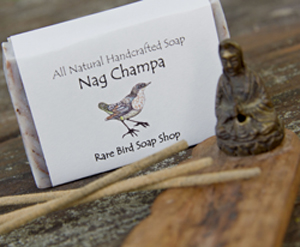
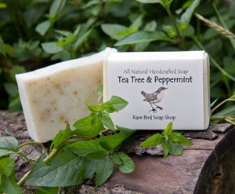
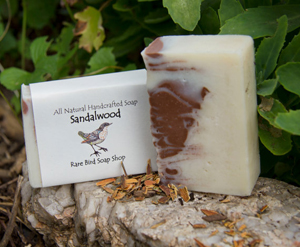
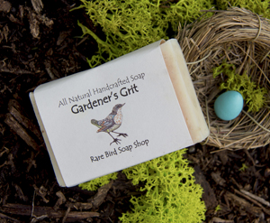
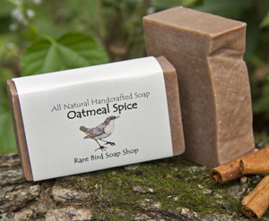
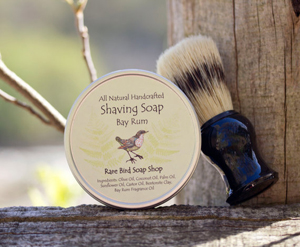
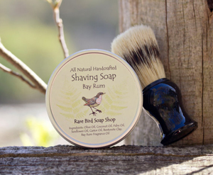

Rare Bird Products
Rare Bird Soap Shop has a variety of handcrafted products ranging from soaps, lotions and salves to facial serums and essential oil blends. To insure high quality results all our products are made in small batches with all natural Vegan ingredients and 100% therapeutic grade essential oils.

Your skin is an organ too, so we believe in the importance of treating your skin as well as you would the inside of your body. Never will you find any of our products with parabens, sulfates or unnatural preservatives. We are committed to providing you with a high quality skincare product and source our ingredients as locally as possible.
 All of our soaps are all natural, Vegan friendly and are made from coconut oil, sustainable palm oil, sunflower oil and olive oil. They are all made by the cold process method and are scented with 100% pure therapeutic grade essentials oils and herbs. Natural powder pigment is added to some for beautiful swirls of color effect. All soaps are cured for at least 3 weeks to ensure a nice soapy lather and long lasting bar.


The older we get the more we realize how vital it is to take care of our skin especially our face. Our Facial Serum is pure Rose-hip seed oil blended with Frankincense essential oil Rose-hip seed oil is a dry oil that goes on like an oil when applied but soaks in nicely to leave your face feeling soft not oily. Frankincense essential oil is great a reducing age spots and wrinkles. It can be applied any time after you wash your face day or night and can be used under makeup.
 Essential oils are a necessity to a healthy lifestyle. Rare Bird provides essential oils and essential oil blends for aromatherapy, medicinal purposes and perfume because they just smell so fantastic!

Rare Bird moisturizers range from Body Butters, Hand Salves, Lotion Bars and Hand & Body Lotion. All moisturizers are made with Organic Shea Butter, a blend of vitamin enriched oils and essential oils. All moisturizers serve a purpose depending on what your needs may be.
 

Shampoo Bars are a great way to switch over to an all natural shampoo. They are just like our body bars but we have added oils like Avocado Oil, Sweet Almond Oil and Castor Oil that condition and moisturize but won't strip your hair of its natural sebum (oil). Hair stays cleaner longer and feels soft and silky.